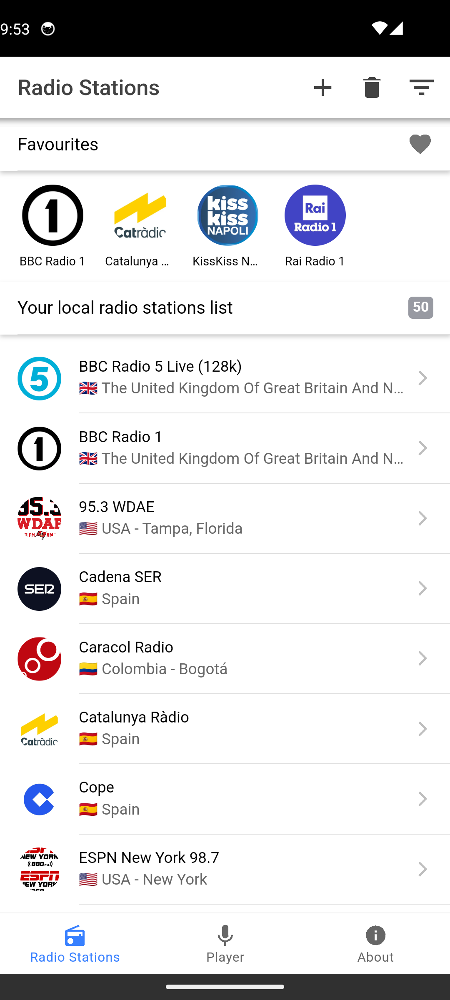
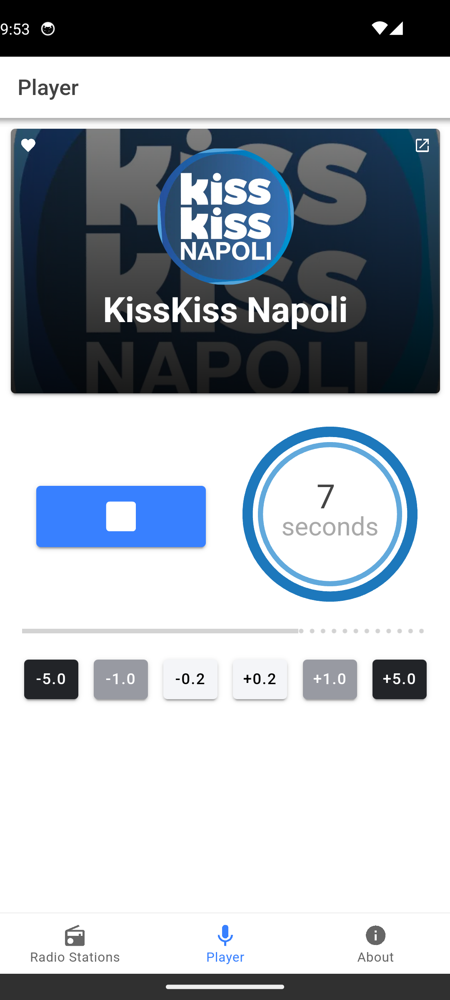
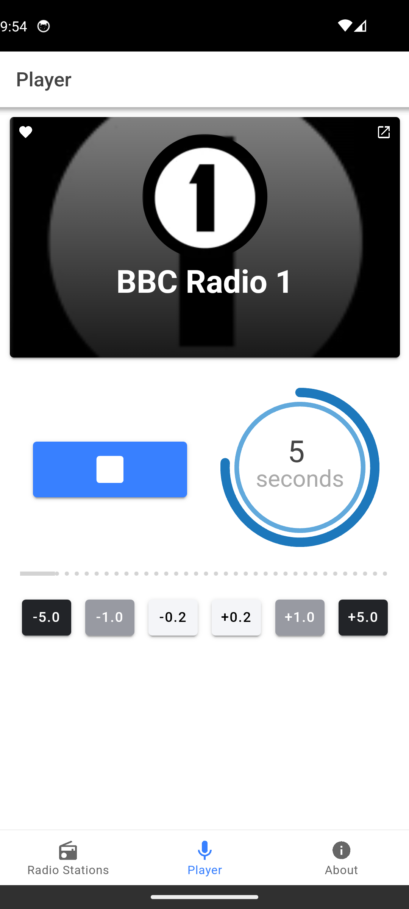

01 / LISTEN
Find your frequency
Browse radio stations and add the ones you want to keep to your own list.
Your radio, your rhythm
Meet KKDelay: a straightforward radio player that lets you find stations, save your favourites, and choose how far behind live you want to listen.
Made for Android · Simple by design


A little more listening room
Sometimes live is just right. Sometimes a few seconds make all the difference. KKDelay gives you a simple way to listen your way.
01 / LISTEN
Browse radio stations and add the ones you want to keep to your own list.
02 / ADJUST
Go live or fine-tune playback in easy steps, from a quick tap to a bigger jump.
03 / MAKE IT YOURS
Save favourite stations for a quicker way back to the radio you love.

Keep listening, even when you switch apps.The moment stays yours
See what’s playing, start or stop your station, and nudge the delay up or down. KKDelay keeps the controls clear, so you can focus on the broadcast.
A look inside
Everything you need to find a station and settle into the sound.
Ready when you are
Get KKDelay on Google Play and find your next favourite station.